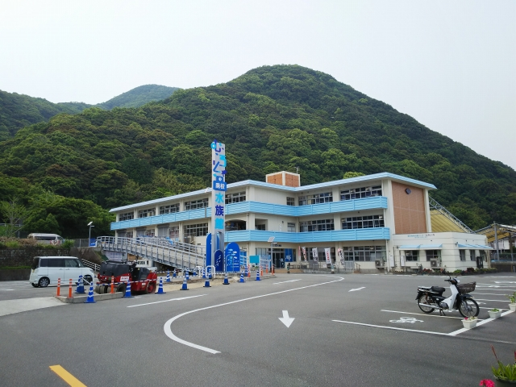
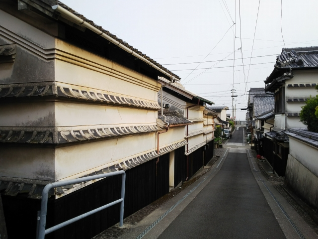
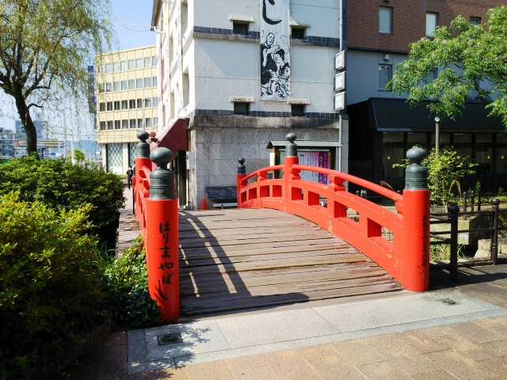
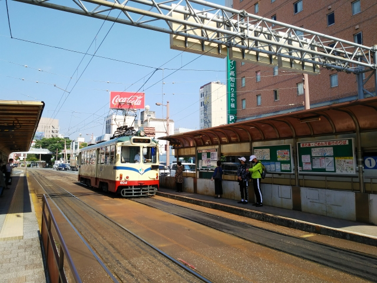

高速バスで高松駅に到着。
駅前のポストには、かわいい阿波踊りのようなブロ
ンズのモニュメントが。
ん？阿波踊り？？
わちゃ～！よー見たら、徳島駅やがな！
高松行きに乗ったつもりが、徳島行にのってもうた
みたいです。
あわてて列車で高松へ。
国鉄型車両も、かなり減ってしまってますね。
留置線エリアにわずかに１８５系が見えるぐらいで
す。
すれ違いのため長時間停車した駅でちょっと駅前散
歩へ。
羽ノ浦？
ここは岩佐模型の店主のご両親の住むエリアでは？？
つーことは、高松と逆方向に乗ってもうたってこと？
ちなみに羽ノ浦から先は、最初は
現行のルートではなく、那賀川の
手前で行き止まりだったんすね。
ご両親は、この旧ルートに乗った
ことあったりして。
とりあえず、このまま乗り続けることに。
阿波海南まで行くみたいです。海沿いを走ると思ってたら、結構山の
中も走ります。
阿波海南駅に到着。
なんか寂しい駅ですね。
この先も線路は続いてるけど、駅の先で途切れてますね。
ホームの先まで行ってみてみると、謎の設備が・・・
駅前に降りてみます。
おっ、変わった車両がやってきました。
謎の設備に向かってるようです。
お客さんも寄ってきました。
撮影スポットって・・・
お～、これは噂のＤＭＶ（デュアル・モード・ビー
クル）やん！
この設備、鉄道モードから車モードに変える場所や
ったんや！
結構短時間で切り替え完了して、すぐ走り去って行
きました。
１０分ぐらいしたら次のが来ました。
この写真ではわかりにくいけど、先に後輪を車体に
仕舞い込んで、次に前輪を収める順番でした。
そうこうしてるうちに甲浦行きがやってきました。
こりゃ乗り込むしかないっしょ。
乗り込んでから、変換設備上でモード変換をするんですが、その間、車内
では軽快な音楽とともに「モード変換中です！」と車内放送が流れます。
モード変換後は、運転手が一旦外に出て、車輪を確認。
そしていよいよ線路の上を走ります。
車内はかなりバスっぽいけど、「カタンカタン」と、２軸の走行音がよく
響きます。
しかし平日の昼でこんだけ乗車するんやったら、休日はどうなるんやろ。
定員はバスより明らかに少ないし、かといって運行本数も少ないし、積み
残し対策が気になるところ。
海の駅東洋町で下車。海が目の前ですが、津波対策の避難タワーが目に付きます。
ここまで来たんで、そのまま西に向かうことにしま
す。
室戸岬のほうに行くバスが来たので、そのまま乗車。

バスは海沿いを走ります。
すでに緯度は潮岬ぐらいまで来てます。

途中に気になる施設があったので途中下車しました。
その名もむろと廃校水族館です。
名前通り、廃校になった学校を使った水族館です。
跳び箱に水槽を入れ込んだり、理科室の流しの所に
魚がいたり、なかなか面白い水族館でした。
これ、なんちゅう魚やったかな？
なぜか、めちゃめちゃ寄ってきました。
外のプールにも、なにやらいそうな・・・
ウミガメがようさんいてました。

次のバスまでめっちゃ時間があったので、西に向か
うバスの始発点の、室戸世界ジオパークセンターま
で３０分ぐらい歩きました。
安芸行きのバスがやってきました。
途中、古い街並みが残ってるという吉良川で途中下
車しました。
台風銀座にある街なので、独特な建物ですね。

再びバスに乗り、土佐くろしお鉄道の奈半利駅に到
着。
バスはこの先、安芸まで行きますが、ここからは鉄
道で高知に向かいます。
２０年ぐらい前に、高知方面からたどり着いたこと
がありましたが、逆方向に乗るのは初めてです。
大正時代の鉄道敷設法で掲げられた予定線「高知県後免ヨリ安芸、徳島
県日和佐ヲ経テ古庄附近ニ至ル鉄道」の最終到達点ですね。

さて、一夜明けて高知ははりまや橋です。
今日こそは、迷わず香川のユーザにたどり着かんと
ダメっすね。
とさでんが健在です。

やっぱりとさでんはこの塗装ですよね。
ヒゲが良く似合ってます。
謝らなくても・・・。ちゃうか。
久々に、とさでんで後免まで行くことにします。
あえて看板を掲げてるのがうれしいですね。
とさでんの東の端のほうは、市内線というより併用軌道という趣きです。
後免方面はホームは無く、下車時に車にひかれないかヒヤヒヤしないと
あきまへん。
こういう車窓って、もうとさでん以外、ないんちゃ
うかな。
後免町駅に到着。

土佐くろしお鉄道の後免町駅の近くです。
というか、元々安芸まではとさでんでしたからね。
ＪＲの後免駅まで歩いて向かいます。
しばらくとさでんの線路脇の細い道を通れます。
ジオラマチックな構内ですね。
昔は市内線と郊外線の切り替わりの駅だったんで、
たくさんの車輛がたむろしてたことと思います。
無事ＪＲの後免駅に到着。
けっこう時間ギリギリでやばかったっす。駆け込み
ました。
鈍行の終着の土佐山田駅。
ここから先、日中に鈍行はほとんど走っておらず、
しょうがなく特急に乗ることに。
ちょっと駅前を散策。
アンパンマンミュージアムの最寄駅らしく、バス停
もおもくそアンパンマンでした。
でも、やっぱり特急の乗り心地はよござんした。
土讃線の名所、大歩危小歩危を横目に。
琴平駅に到着。
ユーザはことでん沿線なので、ここからことでんに
乗ることにします。
なぜか洋風な駅舎。
スマホでは綺麗に写りませんでしたが、このバス、
行先が「内田 琴平」でした。
どんなとこなんでしょうか？
少し歩くとことでん琴平駅に到着。
３０分に１本、走ってます。
時間があるので昼食へ。
少しこんぴらさんのほうに向かって歩くと郵便局が
あります。
実はここ、昭和２９年まで、琴平急行電鉄の琴平駅
があったところなんです。
最盛期、琴平には国鉄以外に私鉄が３社も走ってま
した。
昼は参道にある有名なうどん屋へ。
高い割に、大しておいしくなかったっす・・・
ことでん琴平駅に戻ります。
で、なんと志度線のワンマン化の掲示が！
乗り方は変わりませんて、どーゆーこと？
折り返し高松築港行きが入ってきました。
ことひら駅も、改札に人はいません。
留置線の車輛が気になったのでホームの先まで行っ
てみたら、なんと珍しい元京急の特急車６００形の
車両でした。
では元京急１０００形車両に乗って出発です。
京急っぽいライトやごつごつしたジャンパ詮が好ましいっすね。
で、とある駅で降りてみます。
ちょっと気になる掲示物・・・
もうちょっとはずんでくれたら、考えるなぁ。
つーか、初老のジジイが面接に来たら、ことでんも
腰抜かすかな。
ここは滝宮駅です。
実はことでん、まだ途中下車制度が残ってます。切
符の場合のみ、指定駅での途中下車が可能になって
ます。
創業当時の古い駅舎の残る貴重な駅です。
ウクライナ応援色の電車がやってきました。
散策はこのへんにして、ユーザに向かいます。
ことでんの中心駅、瓦町駅も、もちろん途中下車指
定駅です。
途中下車してホテルにチェックインしてから、志度
線に乗り込みます。
めちゃめちゃお得っすよね。
ワンマン化した志度線、本数もかなり減ってます。
ユーザの最寄駅の潟元に到着。
２両編成の全てのドアが普通に開いて、普通に出発
したけど、駅には誰もおらず。えっ？タダ乗りでき
るやん。
ここまで乗客を信用したワンマン運転は、初めて見
ました。
翌日、竹清へ。
１５年前、近くにユーザがあったので毎日のように
行ってました。
揚げたての天ぷらが名物で、久々に行ったけど、昔
はもっと天ぷらが美味しかったような・・・
ネギもわかめも取り放題なので、コスパはいいと思
います。